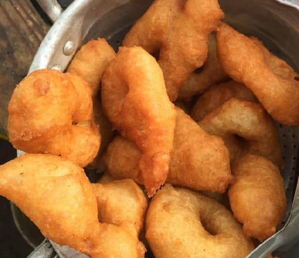

How to Prepare PINKASO

Brief About Pinkaso
Pinkaso is a golden brown, spiced, fried snack usually made by the Hausa’s. It is tasty when it is hot and soft. Pinkaso is usually sold on the streets especially with millet porridge popularly known as Hausa koko. It will be good to try this simple recipe at home one day.
Ingredients
- 250g of plain flour
- 1 Teaspoon of salt
- 7g of dry yeast
- 180ml of lukewarm water
- 1 onion chopped
- 2 chopped green scotch bonnet pepper
- Oil
Steps
- Mix flour, salt and yeast in a bowl.
- Blend the pepper and onion with half of the lukewarm water till it forms a paste.
- Add the blended mixture to the flour, salt and yeast mixture and let it mix well. You can use a wooden spoon, spatula or your hand. It should form a dough.
- Cover the bowl with a sling film and set aside to allow the dough to rise.
- Pour some oil into the frying pan and heat it for a while.
- Dip your hands in water and fetch desired sizes of the dough. Use your finger to create a hole in the middle of the dough and fry in the oil on medium heat.
- Remove from oil when it becomes golden brown and dab with a kitchen towel.
Return to main page